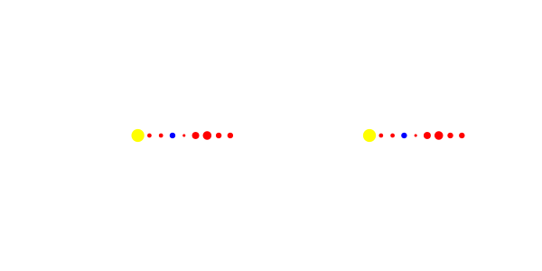
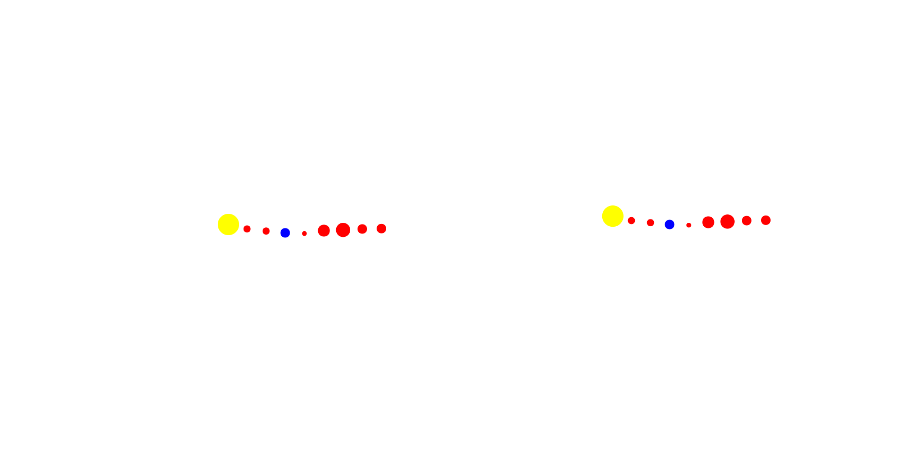
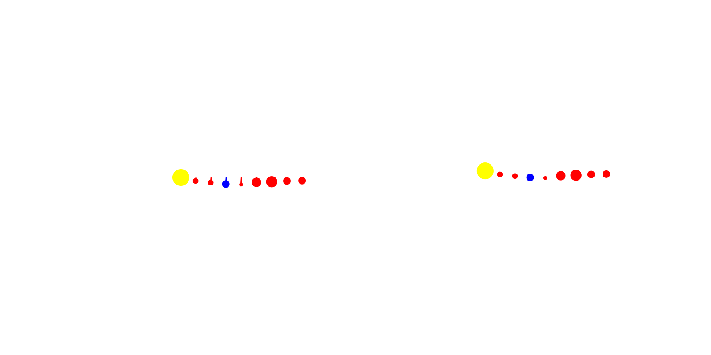

using Pkg;
Pkg.activate(".");
using CairoMakie;Heliocentrism vs Geocentrism
Overview
Another fun little animation that I saw recently was the difference in the dynamics of the solar system when approaching the equations from a heliocentric (sun-centered) or geocentric (Earth-centered) perspective. Although it’s clear now that we orbit the sun and a sun-centered model of the solar system is more correct, it wasn’t always obvious. This concept extends to systems that we have not yet nailed down completely. This simple animation demonstrates that identifying the correct perspective when modeling a system can have a huge pay off in the simplicity of your result.
I thought I’d try to recreate this little animation with Makie.jl as I did previously with the polygon GIF.
Setting up
In this animation, we’ll be rotating some circular shapes around the point representing either the sun or the Earth and tracing their paths as they progress. First, let’s plot the initial frame of the animation using a Figure with 2 axes:
f = Figure(resolution=(800,400));
axes = [Axis(f[1,1]);Axis(f[1,2])]
for ax in axes ax.limits=(-22,22,-22,22) end
function remove_axis_decor!(ax)
ax.topspinevisible = false; ax.bottomspinevisible = false
ax.leftspinevisible = false; ax.rightspinevisible = false
ax.xgridvisible = false; ax.ygridvisible = false
ax.xticksvisible = false; ax.yticksvisible = false
ax.xticklabelsvisible = false; ax.yticklabelsvisible = false
end
remove_axis_decor!.(axes)We can now layout the different planets via a simple scatter plot in each axis. Of course, we cannot use the correct proportions or distances or the plot would be hard to understand. Instead, I’ll settle for simple size differences between the planets and the sun and a somewhat uniform distance between each.
num_bodies = 9
body_locs1 = [(float(i),0.0) for i in 0:2:2(num_bodies-1)]
body_locs2 = [(float(i),0.0) for i in -6:2:2(num_bodies-1)-6]
body_sizes = 3 .* [9,3,3,4,2,5,6,4,4]
body_colors = [:yellow,:red,:red,:blue,:red,:red,:red,:red,:red]
s1 = scatter!(axes[1], body_locs1, markersize=body_sizes, color=body_colors)
s2 = scatter!(axes[2], body_locs2, markersize=body_sizes, color=body_colors)
display(f)
Animation
Okay! Easy as that. Now, we can move on to animating the rotation of the bodies. Each planet will rotate at a different speed and will go until again lining up as they started.
body_speeds = [0.0,47.87,35.02,29.78,24.077,13.07,9.69,6.81,5.43] ./ 200
sun_speed2 = body_speeds[4]
orbit_radii1 = [bl[1] for bl in body_locs1]
orbit_radii2 = [bl[1] for bl in body_locs2]
# Use Observable to add time dependence to planet locations
time_i = Observable(0.0)
body_xs1 = @lift(orbit_radii1 .* cos.(-1 .* body_speeds .* $time_i))
body_ys1 = @lift(orbit_radii1 .* sin.(-1 .* body_speeds .* $time_i))
body_xs2 = @lift(vcat(
orbit_radii2[1]*cos(-sun_speed2*$time_i),
orbit_radii2[1]*cos(-sun_speed2*$time_i) + orbit_radii1[2]*cos(-body_speeds[2]*$time_i),
orbit_radii2[1]*cos(-sun_speed2*$time_i) + orbit_radii1[3]*cos(-body_speeds[3]*$time_i),
0.0,
orbit_radii2[1]*cos(-sun_speed2*$time_i) .+ orbit_radii1[5:end] .* cos.(-1 .* body_speeds[5:end] .* $time_i)
))
body_ys2 = @lift(vcat(
orbit_radii2[1]*sin(-sun_speed2*$time_i),
orbit_radii2[1]*sin(-sun_speed2*$time_i) + orbit_radii1[2]*sin(-body_speeds[2]*$time_i),
orbit_radii2[1]*sin(-sun_speed2*$time_i) + orbit_radii1[3]*sin(-body_speeds[3]*$time_i),
0.0,
orbit_radii2[1]*sin(-sun_speed2*$time_i) .+ orbit_radii1[5:end] .* sin.(-1 .* body_speeds[5:end] .* $time_i)
))
empty!(axes[1].scene.plots)
empty!(axes[2].scene.plots)
s1 = scatter!(axes[1], body_xs1, body_ys1, markersize=body_sizes, color=body_colors)
s2 = scatter!(axes[2], body_xs2, body_ys2, markersize=body_sizes, color=body_colors)
# Create GIF by iterating time
steps = 300
record(f, "gifs/heliocentric_geocentric1.gif", 1:steps) do t
time_i[] = t
end
Nice! We’ve got the two animations moving well. Note that since the animation was fairly straightforward and only required updating the scatter plot locations, we were able to use an Observable for time in Makie. This object allows us to create the initial scatter plots where the scatter locations are wrapped with the @lift macro with the interpolating $time_i. Now, when our Observable, time_i is updated, the scatter points and subsequently the scatter plots are updated. Using this nifty tool, our recording loop is very straightforward. However, using the @lift macro is not particularly intuitive and it took some trial and error to get the definition of the scatter points correctly wrapped in an Observable. Hence, the definitions of body_xs2 and body_ys2 are so messy..
Our next step is to add the path tracing of the planets to each plot. Again, this is a fairly simple procedure that could be completed with an Observable.
# Line observables
line_locs1 = [Observable([body_locs1[i]]) for i in 1:num_bodies]
line_locs2 = [Observable([body_locs2[i]]) for i in 1:num_bodies]
empty!(axes[1].scene.plots)
empty!(axes[2].scene.plots)
for i in 1:num_bodies
lines!(axes[1], line_locs1[i], color=body_colors[i])
lines!(axes[2], line_locs2[i], color=body_colors[i])
end
s1 = scatter!(axes[1], body_xs1, body_ys1, markersize=body_sizes, color=body_colors)
s2 = scatter!(axes[2], body_xs2, body_ys2, markersize=body_sizes, color=body_colors)
# Create GIF by iterating time
steps = 300
record(f, "gifs/heliocentric_geocentric.gif", 1:steps) do t
time_i[] = t
for i in 1:num_bodies
line_locs1[i][] = push!(line_locs1[i][], (body_xs1[][i], body_ys1[][i]))
line_locs2[i][] = push!(line_locs2[i][], (body_xs2[][i], body_ys2[][i]))
end
end
Alright! Our animation is now complete.